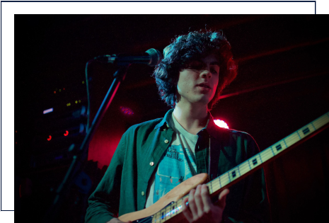

About
「Byleth-Sothis」
20XX年に兵庫県で結成されたロックバンド。以降、大阪を拠点にライブ活動を行う。
Member
Dimitri Blaiddyd
Vocal
19XX年、兵庫県出身。肺活量だけでなく腕力も圧倒的で、
マイクスタンドをへし折ったことがある。
Sylvain Gautie
Guitar
19XX年、兵庫県出身。「やっぱりモテたいならギターでしょ！」
という不純な動機で高校からギターを始める。
天性の作曲センスで数多くの曲を生み出す。

Felix Fraldarius
Bass
19XX年、大阪府出身。父親の影響で幼い頃からベースに触れ、
今では弾いてみた動画の再生回数が
累計100万回を超える実力派ベーシスト。
Dedue Molinaro
Drums
19XX年、山口県出身。子どもの頃は和太鼓クラブに所属。
中学校からバチをドラムスティックに持ち替え、
ついでに身長もものすごく伸びた。
Discography

Blue Moon
Words:Felix
Music:Sylvain
Music:Sylvain
Tragedy of Dascar
Words:Dedue
Music:Sylvain
Music:Sylvain
The Return of
the KING
Words&Music:Dimitri